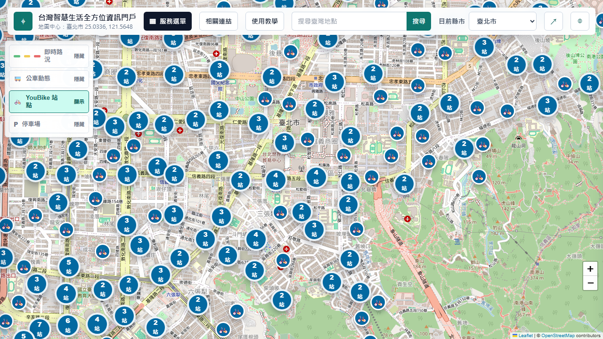
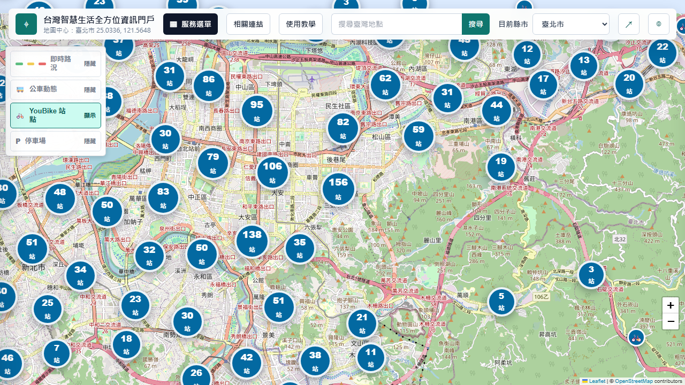
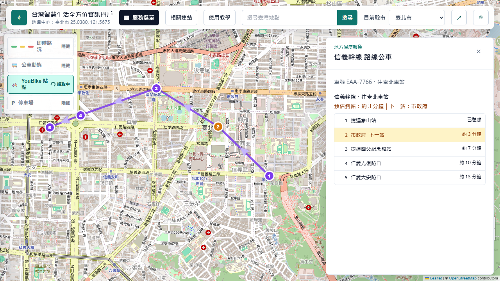
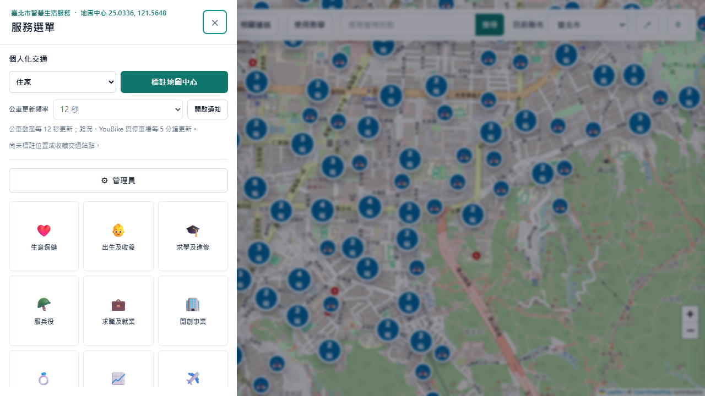

本區塊僅整理政府資料開放平臺實際回傳的資料集內容；資料正確性與更新時間以發布機關公告為準。
⌖
台灣智慧生活資訊門戶
正在取得目前位置...
點選地圖查看地方資訊；交通圖層可在左上角切換
伺服器控制
管理員
- 可用憑證
- -
- TDX 快取
- -
常用網站
相關連結
政府與公共服務
交通與旅運
天氣與防災
購物與電商
影音與音樂
辦公與協作
金融、繳費與發票
新聞與即時資訊
地圖與旅遊
社群與通訊
餐飲與外送
學習與知識
求職與職涯
AI 與雲端工具
健康與生活安全
快速上手
網站使用教學

1. 找到要查看的位置
允許定位即可前往目前位置，也能使用上方搜尋欄、縣市選單或重新定位按鈕。手動拖曳或縮放地圖後，停留 5 秒便會更新該地交通資料。

2. 切換交通圖層
從左上角選擇即時路況、公車、YouBike 或停車場。YouBike 與停車場會以數量群組顯示，兩個圖層會互相切換，避免標記重疊。

3. 查看公車路線與站序
開啟公車動態後點選車輛，即可看到目前方向的所有站牌；地圖上的淡紫色箭頭表示每一段路線的行進方向。

4. 查詢地方資訊與常用服務
點選地圖任一位置可查看當地天氣、安全與生活資訊；「服務選單」可依分類開啟政府資料，也能管理收藏位置與通知。